论坛管理
站长可以在管理后台管理论坛版块，包括添加新分区、添加新版块、添加子版块、为版块添加版主、设置版块显示顺序及编辑、删除版块等。
操作路径：【后台】=>【论坛】=>【版块管理】
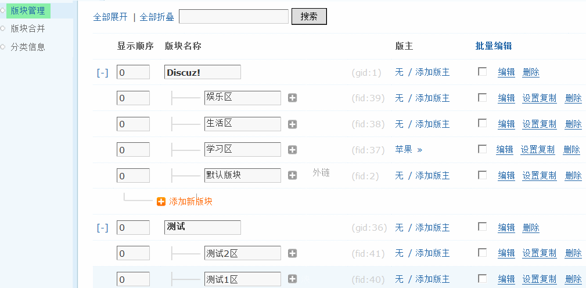一、添加新分区
点击“添加新分区”然后填写分区名称，点击“提交”即可完成添加。
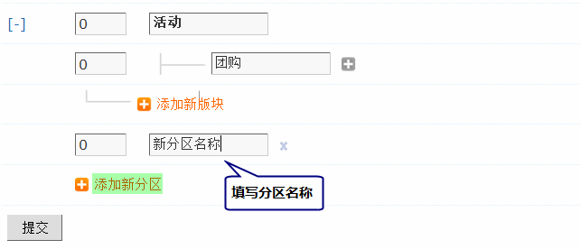二、添加新版块
点击分区下的“添加新版块”，为该分区添加版块：
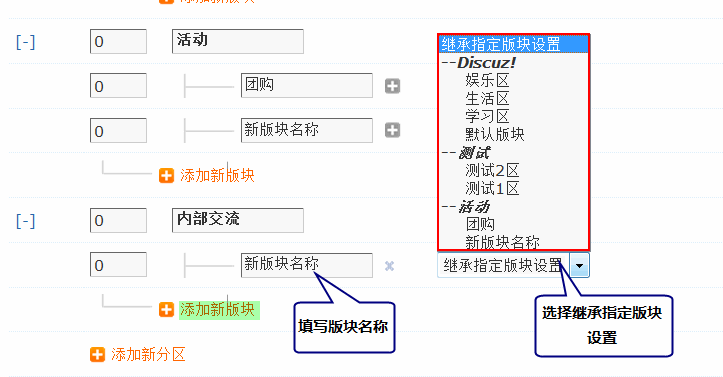填写新版块的名称，然后选择继承指定的版块设置，不选择为不继承。
到前台查看新增加的分区和版块：
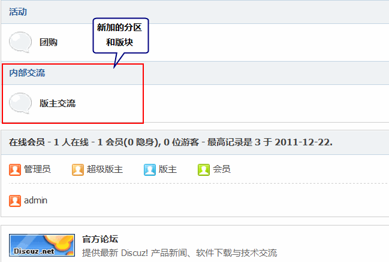说明：当分区下有版块时，才可以在前台正常显示，否则分区无法在前台显示。
三、添加版主
点击分区或者版块右侧的“添加版主”链接，即可为该分区或版块添加版主。
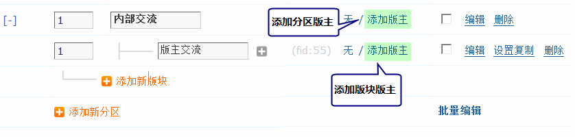填写要添加为版主的会员名，并设置用户组；
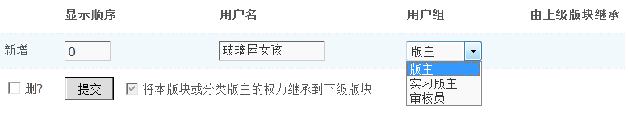说明：
1、“由上级版块继承”表示该版主是由上级版块或分类继承而来，而不是针对本版块独立设置的设置的版主，不能单独删除。 2、“将本版块或分类版主的权力继承到下级版块”在当前论坛是分类时，默认为选定状态；在当前版块是子版块时，默认为不选状态。
3、将本版块或分类版主的权力继承到下级版块：如果勾选，那么该版块版主也可以管理该板块的下级版块；
四、编辑分区
1、基本设置
点击分区后面的编辑，可以对该分区进行详细信息设置：
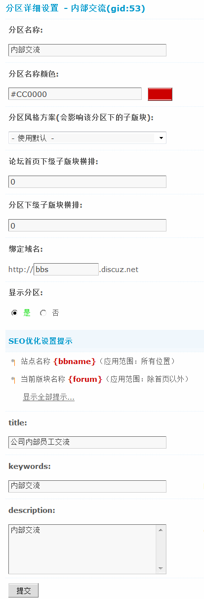分区名称：设置该分区名称；
分区名称颜色：设置该分区名称的显示颜色；
分区风格方案：访问者进入分区版块及子版块所使用的风格方案
论坛首页下级子版块横排：设置进入论坛首页时下级子版块横排时每行版块数量，如果设置为 0，则按正常方式排列
分区下级子版块横排：设置进入分区时，下级子版块横排时每行版块数量，如果设置为 0，则按正常方式排列；
绑定域名：需要先设置版块的根域名，操作路径：【后台】=>【全局】=>【域名设置】点击根域名设置，然后设置版块的根域名，如下图所示：
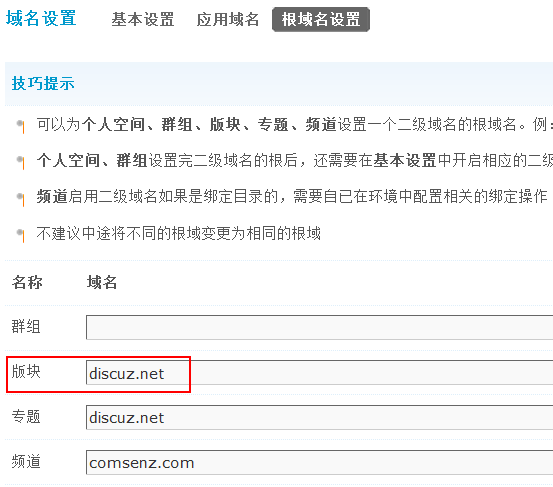根域名设置完后，此处域名绑定才能生效。
显示分区：选择“否”将暂时将分区隐藏不显示，但分区内容仍将保留，且用户仍可通过 URL 访问到此分区及其版块；
2、SEO 优化设置
title：设置分区的标题，标题出现在页面头部的标题中。
keywords：SEO关键字，放在 meta 的 keyword 标签中，用于记录本页面的关键字，多个关键字间请用半角逗号 ”,” 隔开。
description：SEO 描述，此描述内容用于搜索引擎优化，放在 meta 的 description 标签中，用于记录本页面的概要与描述。
五、编辑版块
点击版块后面的“编辑”，可以对版块进行详细的个性化设置。
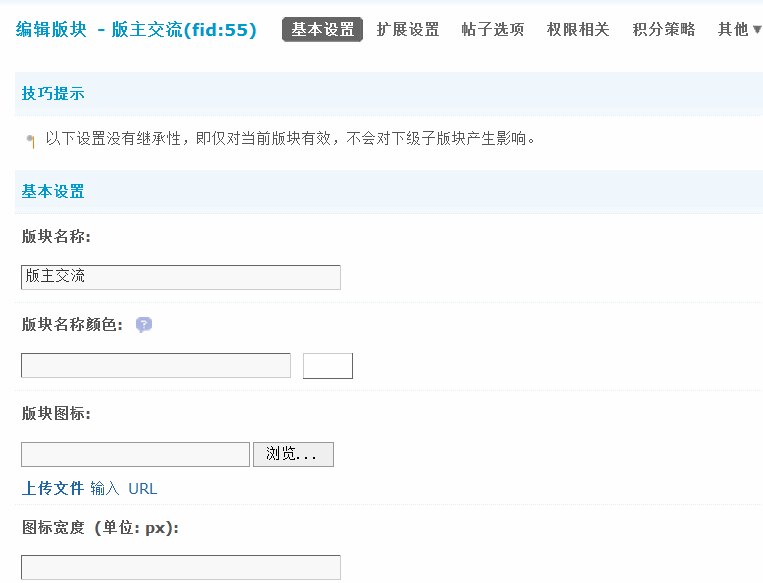编辑版块的详细设置请查看：基本设置、扩展设置、帖子选项、权限相关、积分策略、其它。
六、设置复制
可以将源版块项目的某些设置应用到其他多个版块，用于以一个版块的设置为基础，快速设置一批版块。
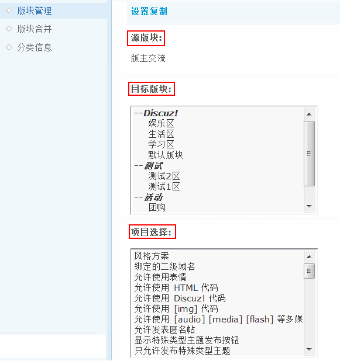源版块：指将该版块的某些设置复制到目标版块。
目标版块：选择要将源版块复制到哪些目标版块，可以按住 CTRL 多选。
项目选择：选择要将源版块的哪些项目复制到目标版块，可以按住 CTRL 多选。
版块设置复制一旦提交立即生效，并无法恢复，请仔细选择目标版块和设置项目。
七、批量编辑
批量编辑版块，即在要编辑版块的时候，选择多个版块，然后点击批量编辑，就可以进入批量编辑界面。
如果只批量编辑某个分区下的所有版块，只需要点击该分区后的复选框即可全部选中所有该分区下的版块。
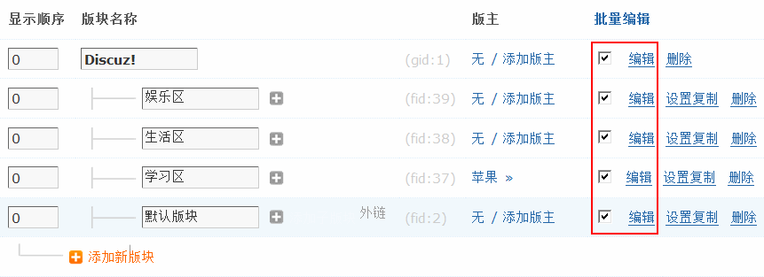按住 alt 键修改那些单选，复选的项目，可以横向的全部选择。
从这里，可以方便的批量设置多个版块的设置。
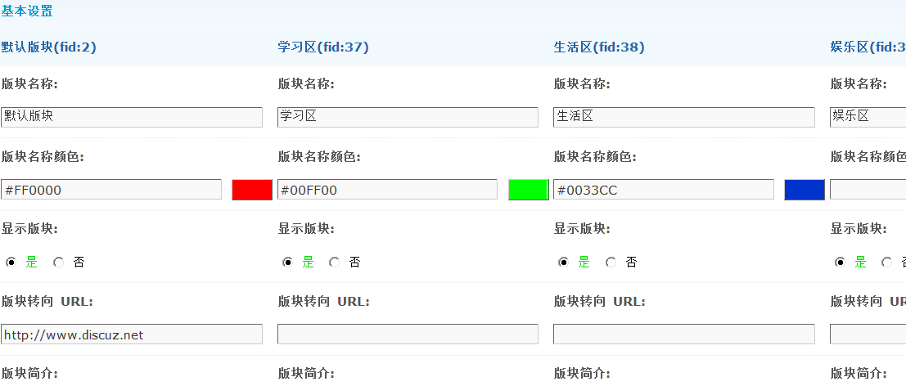八、删除版块或分区
直接点击要删除版块或者分区后面的“删除”链接即可删除。
注意：如果分区下有版块或者子版块，必须先删除版块和下级子版块然后才可以删除分区。
如果版块下有子版块的话，必须先删除子版块然后才可以删除版块。
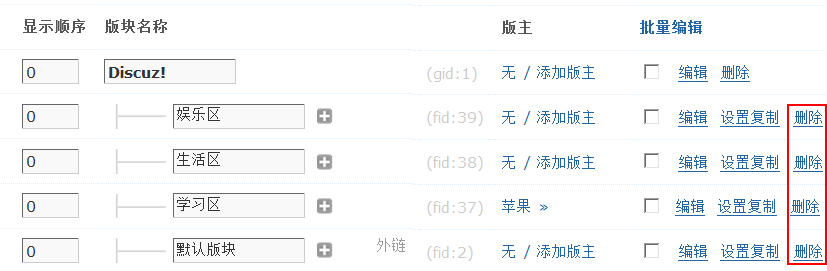九、搜索
如果您的站点中版块比较多，可以使用搜索功能定位版块。
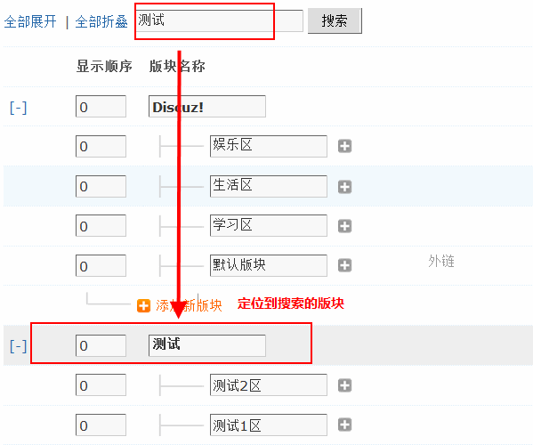十、全部展开/全部折叠
适合版块比较多的情况，可以展开/折叠所有分区下的所有版块。
同时分区前台的[-][+]标示也可以单独折叠/展开某个分区下的所有版块，方便查看。